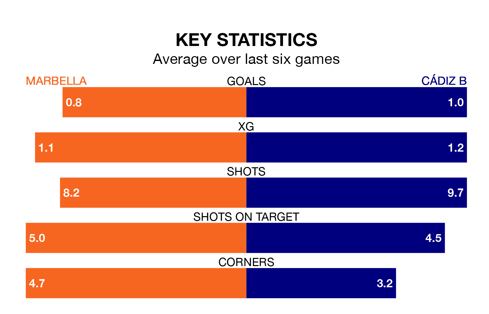

Cádiz B face a challenge to maintain their high-scoring form away against a tight Marbella defence on Sunday.
With 24 goals in 22 games, Cádiz B are the joint-fourth-highest scorers in the Segunda División RFEF Group 4 ahead of the 3pm kick-off at Estadio Municipal de Marbella.
They face a Marbella side who have scored 23 in 22 matches, but conceded only 16 goals, putting them joint-third among the league's tightest defences – only Sevilla B and Águilas have conceded fewer goals.
Marbella are fourth in the table after 22 games, of which they have won 10 and drawn six, earning 36 points.
Cádiz B are eight places behind the hosts in 12th, with six wins and nine draws putting them on 27 points.
In the last five years, Marbella and Cádiz B have played each other on four occasions. Marbella won two of them, Cádiz B one, and they drew once.
On average, Marbella scored 0.8 goals and Cádiz B 0.2 in those matches.
Their last meeting was on October 8, when Marbella won 2-0 away.
Marbella are in mixed form in the Segunda División RFEF Group 4, with two wins and three draws from their last six games.
With a win and four draws over that period, the away team's form is slightly worse – they have taken seven points from 18, compared to Marbella's nine.
Marbella's last match was on Sunday, a 1-1 draw against Orihuela CF, with José Manuel Carrasco Correa getting the goal for Marbella.
Cádiz B drew 1-1 with Union Estepona CF last time out, on February 10, with Karl Edouard Blaise Etta Eyong on the scoresheet.
Updated: 12:06 (UTC), 15/02/24